Section I (50 marks)
1. Given that 2 log x2+log = k log x, find the value of k. (2 marks)
2. A variable P varies directly as t3 and inversely as the square root of s. When t = 2 and s = 9, P = 16. Determine the equation connecting P, t and s, hence find P when s = 36 and t=3. (4 marks)
3. Asia invested some money in a financial institution. The financial institution offered 6% per annum compound interest in the first year and 7% per annum in the second year. At the end of the second year, Asia had Ksh 170 130 in the financial institution. Determine the amount of money Asia invested. (3 marks)
4. The figure below represents a wedge ABCDEF. EF 10 cm, angle FBE 45° and the angle between the planes ABFE and ABCD is 20°.
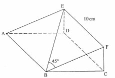
Calculate length BC, correct to l decimal place.(3 marks)
5. Simplify √ 54 + ∛ 3/ √ 3 (2 marks)
6. In the figure below, AB is a tangent to the circle, centre O and radius 6 cm. The arc AC subtends an angle of 60° at the centre of the circle.
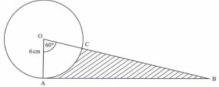
Calculate the area of the shaded region, correct to 1 decimal place. (4 marks)
7. Use completing the square method to solve 3x2 + 8x — 6 = 0, correct to 3 significant figures. (3 marks)
8. Three workers, working 8 hours per day can complete a task in 5 days. Each worker is paic Ksh 40 per hour. Calculate the cost of hiring 5 workers if they work for 6 hours per day tc complete the same task. (3 marks)
9. The table below represents a relationship between two variables x and y.
(b) Use the graph to find the value off when x — 0.(1 marks)
10. State the amplitude and the phase angle of the curve y = 2sin x — 30° .(2 marks)
11. The mass, in kilograms, of 9 sheep in a pen were: 13, 8, 16, 17, 19, 20, 15, 14 and 11.
Determine the quartile deviation of the data. (3 marks)
12. The position of two points C and D on the earth’s surface are (8°N, l 0OE) and (8°N, 30°E) respectively. The distance between the two points is 600 nm. Determine the latitude on which C and D lie. (3 marks)
13. In the figure below OP — p, OR = r, PQ:QR = 1:2 and PS = 3PR.
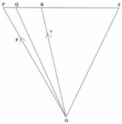
Express QS in terms of p and r. (4 marks)
14. In a certain firm there are 6 men and 4 women employees. Two employees are chosen at random to attend a seminar. Determine the probability that a man and a woman are chosen. (3 marks)
15. Under a transformation T =
(4 —3) (2 3)
, triangle OAB is mapped onto triangle OA'B' with vertices O(0,0), A’(18,0) and B'(18, 6). Find the area of triangle OAB. (3 marks)
16. Find the value of k if 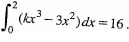
Section II
Answer any 5 questions from this section
17. The 5th and 10th terms of an arithmetic progression are 18 and —2 respectively. (a) Find the common difference and the first term. (4 marks)
(b) Determine the least number of terms which must be added together so that the sum of the progression is negative. Hence find the sum. (6 marks)
18.Complete the table below for the equation y=x2-4x+2
(2 marks)
(c) Use the graph to solve the equation, x2 — 4x + 2 = 0 (2 marks)
(d) By drawing a suitable line, use the graph in (b) to solve the equation A-2 — 5x + 3 = O. (3 marks)
19. (a) The table below shows the frequency distribution of heights of 40 plants in a tree nursery.
(b) Calculate:
(i) the mean height of the plants; (3 marks)
(ii) the standard deviation of the distribution. (4 marks)
(c) Determine the probability that a plant taken at random has a height greater than 40 cm. (2 marks)
20. (a) Using a ruler and a pair of compasses only, construct: (i) a parallelogram ABCD, with line AB below as part of it, such that AD = 7 cm and angle BAD = 600; (3 marks)
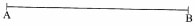
(ii) the locus of points equidistant from AB and AD; (1 mark)
(iii) the perpendicular bisector of BC. (1 mark) (b) (i) Mark the point P that lies on DC and is equidistant from AB and AD. (1 mark)
(ii) Measure BP. (1 mark)
(c) Describe the locus that the perpendicular bisector of BC represents. (1 mark)
(d) Calculate the area of trapezium ABCP. (2 marks)
21. The table below shows some values of the curves y = 2 cos x and y = 3 sin x.
(a) Complete the table for values of y = 2 cos x and y = 3 sin x, correct to 1 decimal place. (2 marks)
On the grid provided, draw the graphs of y = 2 cos x and y = 3 sin x for 0° x 360°, on the same axes. (5 marks)
(c) Use the graph to find the values of x when 2 cos x — 3 sin x = 0 (2 marks)
(d) Use the graph to find the values of y when 2 cos x = 3 sin x. (1 marks)
22. The figure below is a model of a watch tower with a square base of side 10 cm. Height PU is 15 cm and slanting edges UV = TV = SV = RV = 13 cm.
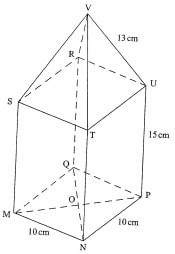
Giving the answer correct to two decimal places, calculate:
(a) length MP; (2 marks)
(b) the angle between MU and plane MNPQ; (2 marks)
(c) Length of VO; (3 marks)
(d) The angle between planes VST and RSTU; (3 marks)
23. The table below shows monthly income tax rates for a certain year.
(a) Calculate:
(i) Sila’s taxable income;(3 marks)
(ii) the net tax payable by Sila in that month;(5 marks)
(b) In July that year, Sila’s basic salary was raised by 4%. Determine Sila’s net salary in July.(3 marks)
24 A hotel buys beef and mutton daily. The amount of beef bought must be at least 30kg and that of mutton at least 20 kg. The total mass of beef and mutton bought should not exceed 100 kg. The beef is bought at Ksh 360 per kg and the mutton at Ksh 480 per kg.
The amount of money spent on both beef and mutton should not exceed Ksh 43 200 per day. Let x represent the number of kilograms of beef and y the number of kilograms of mutton.
(a) Write the inequalities that represent the above information.(3 marks)
(b) On the grid provided, draw the inequalities in (a) above.(3 marks)
(c) The hotel makes a profit of ksh 50 on each kg of beef and ksh 60 on each kg of mutton.Determine the maximum profit the hotel can make(3 marks)
2 log x2+log√x=klogx
log(x4x1/2
=logxk
k=1/2
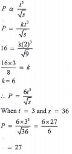
p2=170130
p2=170130/1.07
=Ksh 150000
BF = 10 B1
Cos 20‘ BC/10
BC=10 Cos 20º
=9.4 cm
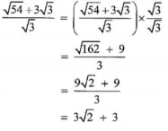
AB=6tan 60º or OB = 6/cos69
Area of triangle OAB =1/2x60x 6tan 60º
Area of sector OAC=60/360 x π x 62
Area of shaded part = 31.18 —18.85
— 12.3 cm2
7. Use completing the square method to solve 3x2 + 8x — 6 = 0, correct to 3 significant figures.(3 marks)
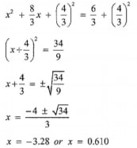
W : H : D
3 : 5 :x
No. of Days = 5 x 8/6 x 3/5
= 4 days
cost = 5 x 6 x 4 x 40
= Ksh 4800
(a) On the grid provided draw the line of best fit.(3 marks)
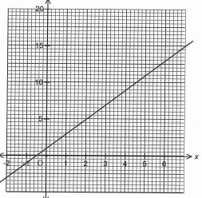
When = 0, y = 1
Amplitude = 2
Phase angle = 30°
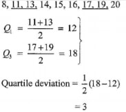
Longitude difference = 30 — 10 = 20°
600 — 20 x 60 Cos B
Cos 8 = 0.5
8 = 60°
Latitude = 60°N
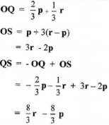
P(MW or WM) =6/10 + 4/9 + 4/10 + 6/9
24/90+24/90
=8/15
15. Triangle OAB is mapped onto triangle OA'B' with vertices O(0,0), A’(18,0) and B'(18, 6). Find the area of triangle OAB. (3 marks)
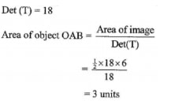
16. Find the value of k if
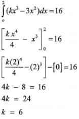
a + 4d= 18
a + 9d= — 2
5d = —20
a = 34
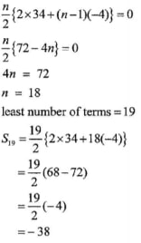
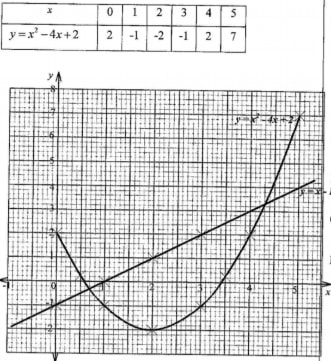
x=0.6± 0.05
x=3.4 ± 0.05
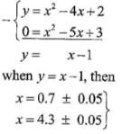
(a) State the modal class. (1 marks)
Model Class 30 - 40
(i) The mean height of the plants; (3 marks)
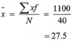
No. of plants whose height>40 = 4+2=6
p(height>40cm)=6/40=0.15
20. (a) Using a ruler and a pair of compasses only, construct:
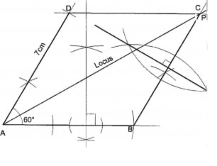
(i) a parallelogram ABCD, with line AB below as part of it, such that AD = 7 cm and angle BAD = 600; (3 marks)
‹BAD = 60° Line DC or BC correctly drawn Point C correctly located Parallelogram ABCD
Angle bisector of (iii) the perpendicular bisector of BC. (1 mark) bisector of BC ✓ drawn (b) (i) Mark the point P that lies on DC and is equidistant from AB and AD. (1 mark) Point P identified and ✓ marked on line DC (ii) Measure BP. (1 mark) BP = 7 ± O. 1 cm (c) Describe the locus that the perpendicular bisector of BC represents. (1 mark) Locus of Points equidistant from B and C (d) Calculate the area of trapezium ABCP. (2 marks) 21. The table below shows some values of the curves y = 2 cos x and y = 3 sin x. (a) Complete the table for values of y = 2 cos x and y = 3 sin x, correct to 1 decimal place. (2 marks) x° 0° 30° 60° 90° 120° 150° 180° 210° 240° 270° 300° 330° 360° y = 2 cos x 2 1.7 1 0 -1 -1.7 -2 -1.7 -1 0 1 1.7 2 y = 3 sin x 0 1.5 2.6 3 2.6 1.5 0 -1.5 -2.6 -3 -2.6 -1.5 0 On the grid provided, draw the graphs of y = 2 cos x and y = 3 sin x for 0° x 360°, on the same axes. (5 marks) 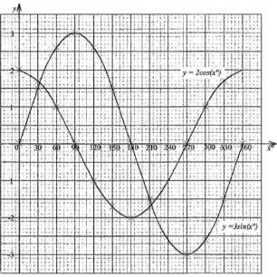 (c) Use the graph to find the values of x when 2 cos x — 3 sin x = 0 (2 marks) 2co8x-3sinx=0 =2co8x=3sinx x=34° and x=214° (d) Use the graph to find the values of y when 2 cos x = 3 sin x. (1 marks) y=1.6 and y = -1.6 22. The figure below is a model of a watch tower with a square base of side 10 cm. Height PU is 15 cm and slanting edges UV = TV = SV = RV = 13 cm. Giving the answer correct to two decimal places, calculate: (a) length MP; (2 marks) MP2=102+102 MP=√ 200 =14.14 (b) the angle between MU and plane MNPQ; (2 marks) 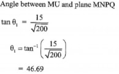 (c) Length of VO; (3 marks) 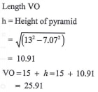 (d) The angle between planes VST and RSTU; (3 marks) 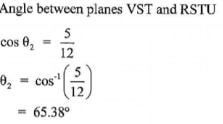 23. The table below shows monthly income tax rates for a certain year. In that year a monthly personal tax relief of Ksh 1 280 was allowed. In a certain month of that year, Sila earned a monthly basic salary of Ksh 52 000, a house allowance of Ksh 7 800 and a commuter allowance of Ksh 5 000. (a) Calculate: Taxable income = 52000 + 7800 + 5000 = Ksh 64800 (i) Sila’s taxable income;(3 marks) Tax payable 11180x0.1=1118 10534x 0.15 =1580.10 10534 x0.2 = 2106.80 10534x 0.25 = 2633.50 22018x 0.3 = 6605.4 Total tax = 14043.8 (ii) the net tax payable by Sila in that month;(5 marks) Net tax = 14043.8 —1280 = 12763.8 (b) In July that year, Sila’s basic salary was raised by 4%. Determine Sila’s net salary in July.(3 marks) Additional tax = 4/100 x 52000 x 0.3 100 = Ksh 624 40 Net salary = 64800 — 12763.8 — 624 + (4/100 x 52 000) = Ksh 53492.20 24 A hotel buys beef and mutton daily. The amount of beef bought must be at least 30kg and that of mutton at least 20 kg. The total mass of beef and mutton bought should not exceed 100 kg. The beef is bought at Ksh 360 per kg and the mutton at Ksh 480 per kg. The amount of money spent on both beef and mutton should not exceed Ksh 43 200 per day. Let x represent the number of kilograms of beef and y the number of kilograms of mutton. (a) Write the inequalities that represent the above information.(3 marks) x≥30; y≥20 x+y=≤100 360x+480≤43200 0r 3x+4y≤360 (b) On the grid provided, draw the inequalities in (a) above.(3 marks) 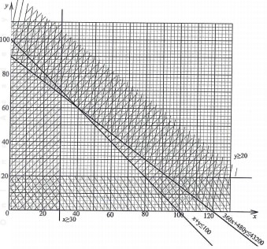 (c) The hotel makes a profit of ksh 50 on each kg of beef and ksh 60 on each kg of mutton. Determine the maximum profit the hotel can make (3 marks) objective function = 50x+60y profit=50x60+60x60 =5600
bisector of BC ✓ drawn
(b) (i) Mark the point P that lies on DC and is equidistant from AB and AD. (1 mark)
Point P identified and ✓ marked on line DC
BP = 7 ± O. 1 cm
Locus of Points equidistant from B and C
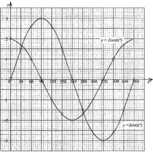
2co8x-3sinx=0
=2co8x=3sinx
x=34° and x=214°
y=1.6 and y = -1.6
MP2=102+102
MP=√ 200 =14.14
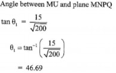
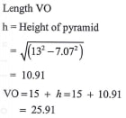
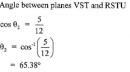
In that year a monthly personal tax relief of Ksh 1 280 was allowed. In a certain month of that year, Sila earned a monthly basic salary of Ksh 52 000, a house allowance of Ksh 7 800 and a commuter allowance of Ksh 5 000.
Taxable income = 52000 + 7800 + 5000 = Ksh 64800
Tax payable 11180x0.1=1118
10534x 0.15 =1580.10
10534 x0.2 = 2106.80
10534x 0.25 = 2633.50
22018x 0.3 = 6605.4
Total tax = 14043.8
Net tax = 14043.8 —1280 = 12763.8
Additional tax = 4/100 x 52000 x 0.3 100 = Ksh 624
40 Net salary = 64800 — 12763.8 — 624 + (4/100 x 52 000)
= Ksh 53492.20
x≥30; y≥20
x+y=≤100
360x+480≤43200 0r 3x+4y≤360
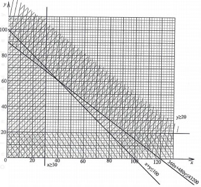
(c) The hotel makes a profit of ksh 50 on each kg of beef and ksh 60 on each kg of mutton. Determine the maximum profit the hotel can make (3 marks)
objective function = 50x+60y
profit=50x60+60x60
=5600